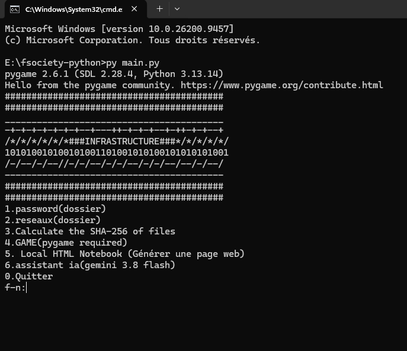

I use python language to create this page, but the programming language to create this is an AI tool—it's not me who created this tool. If my English is hard to understand, it's normal because normally I don't speak English, so I am learning English and HTML. After this, I'm going to learn JavaScript and maybe Java simply.

In my tool box, as you can see, there are multiple functions.
I am going to introduce them to you:
1. Password & Cryptography: The first function is a file containing other tools: a password generator, a tool to verify if your password is strong, and a tool to decipher or encrypt text using shift letter rules.
2. Network (Réseaux): In this section, you can configure your own IP address, find information using a public IP address, scan Wi-Fi to see information about the network, and scan to find open ports.
3. SHA Calculator: Calculate the SHA hash for a specific file.
4. Local HTML Builder: This is currently where I create the webpage! It creates a text file where you can write HTML, CSS, or JavaScript for your pages, and Python launches the web page so you can see your creation.
5. AI Assistant: The AI is just used to ask questions inside the tool thanks to a Gemini API key. To use this, you need to provide your own API key from Gemini.
6. Exit: The last function stops the program safely using different modules.